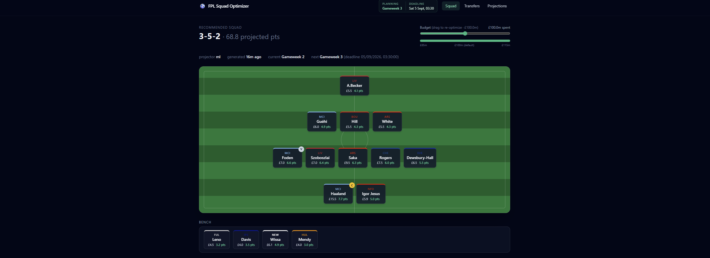

Fantasy Premier League Squad Optimiser
Python | LightGBM | PuLP | FastAPI | React | TypeScript | Docker | GitHub Actions
- Built a tool using historical FPL API data (player stats, prices, fixtures) to recommend an evidence-based best team and best transfers each gameweek.
- Built and deployed a full-stack app combining a LightGBM points predictor with a PuLP linear programming optimiser, automated via GitHub Actions and served through a FastAPI + React app on Fly.io.
- Backtested across three seasons, showing a statistically significant improvement in player ranking quality over a naive baseline (p < 0.0001).
- +175 points vs. a pick-once baseline
- 3 seasons backtested
- 49 automated tests
- 2× daily self-updating pipeline
FPL API + historical CSVs
SQLite (raw → staged)
Feature engineering
LightGBM predictor
PuLP optimizer
FastAPI
React / TS
Read the full writeup
Data
The public FPL API (bootstrap-static, fixtures, element-summary, entry lookup) plus 3 seasons of historical per-gameweek data from the vaastav/Fantasy-Premier-League community dataset. GitHub Actions runs the full pipeline twice a day and redeploys automatically when the artifacts change.
Bugs I found and fixed
- The fixture-difficulty feature was dead for a month. FPL silently changed its team-strength data scale mid-season. Because the model was trained on the old scale, every live fixture looked equally weak. Sweeping the feature across its whole live range moved predictions by exactly 0.000000. I caught it by asking "why does it want a player from a team facing a strong opponent?", not from any metric. The fix was percentile-rank encoding, which doesn't depend on scale, plus a new
validate.pygate that fails the pipeline before a bad export can ship. - A stale local database was committed over fresh CI artifacts three times.
fpl exportnow refuses to run on data older than 6 hours. - The scheduled cron job had never actually run. I moved it off the top of the hour, which is when GitHub's scheduler is most congested.
Key decisions
- I built the optimizer on naive projections first and swapped in the ML model later. That proved the LP mechanics worked on their own, separate from model complexity.
- I chose FastAPI + React over Streamlit to demonstrate full-stack ability.
- The deployed runtime serves only cached JSON artifacts, with no live SQLite or LightGBM. This keeps the image small and solves fast (~250ms).
- CI builds the real image, boots it, and smoke-tests every route before a deploy can go ahead.
- Team strength is encoded as a within-season percentile rank instead of raw values. This came directly out of the dead-feature bug above.
Validation
I tested with a season-replay backtest harness across 3 seasons, with no lookahead:
- The ML model ranks players significantly better than a naive form × fixture-difficulty rule (paired per-gameweek Spearman correlation, p < 0.0001 over 110 gameweeks). That ranking edge alone didn't turn into extra season points.
- The transfer engine is the biggest proven win, at roughly +175 points over a "pick once and never change" baseline.
- I adopted a multi-gameweek valuation horizon even though its backtest was statistically inconclusive. The effect pointed the same way and grew steadily in all three seasons, so I made the call on that evidence instead of chasing a p-value.